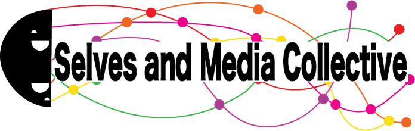

About Me
I am an Assistant Professor of Media Psychology in the Department of Strategic Marketing and Business
in the School of Communication at Emerson College (since August 2023). I completed Ph.D. (2023)
and M.A. (2020) degrees in social psychology at Arizona State University. I have a B.S. (2017) in
psychology and philosophy from Grand Valley State University.
Broadly, I am interested in self and identity processes in the context of media and technology.
At Emerson, I direct the Selves and Media Laboratory. We examine how people integrate their
physical and mediated experiences into a coherent sense of self (both adaptively and maladaptively).
My work draws from theories in both psychology and communication, and appears in journals
like Cyberpsychology, Behavior, and Social Networking, Computers in Human Behavior, and Technology,
Mind & Behavior. Ultimately, I aim to bridge ideas across disciplines to promote healthy relationships
between people and technology.
I am committed to open and inclusive scientific practices, sharing my data, materials, analysis scripts, and
preregistrations for my studies on OSF (osf.io/6dzy4) when possible.
Feel free to contact me at cameron.bunker@emerson.edu if you are interested in collaborating or have any questions about my work.
Selves and Media Lab

Media (modes of communication beyond face-to-face) complicate our sense of self. Media can
help, enhance, and expand the self, but also constrain, deter, and limit the self. For example,
people can use social media platforms and interact with AI chatbots to figure out who
they think they are and to try new modes of self-expression. At the same time, algorithms and social norms
on mediated platforms can reinforce stereotypes or exert social pressures.
The Selves and Media Laboratory examines this duality. We draw from theories in psychology and communication and incorporate a range of methods,
including traditional survey and behavioral experiments, longitudinal designs, self and informant reports,
behavioral data collected via logged smartphone use, and ecological momentary assessment.
Representative publications cover:
Personality
-
Bunker, C. J. (2026). Self-perceptions on social media and offline contrast with those
perceived in generalized but not close others. European Journal of Personality.
Advance online publication.
https://doi.org/10.1177/08902070261470900
[PDF]
-
Bunker, C. J., & Kwan, V. S. Y. (2024). Similarity between perceived selves on social
media and offline and its relationship with psychological well-being in early and late
adulthood. Computers in Human Behavior, 152, 108025.
https://doi.org/10.1016/j.chb.2023.108025
[PDF]
Social Biases
-
Bunker, C. J., Torres-Pantoja, S., Panek, E., & Bayer, J. B. (2026). (Mis)perceptions
of other peoples’ usage of social media platforms.
Technology, Mind, & Behavior. Advance online publication.
https://doi.org/10.1037/tmb0000201
[PDF]
-
Bunker, C. J., & Varnum, M. E. W. (2021). How strong is the association between social
media use and false consensus? Computers in Human Behavior, 125, 106947.
https://doi.org/10.1016/j.chb.2021.106947
[PDF]
Culture
Contact
Please contact me: cameron.bunker@emerson.edu.
Emerson College faculty bio